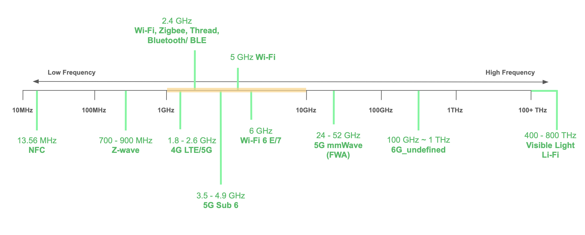

Network 101: The Connected Life
The Internet of Things (IoT) has been a buzzword for over a decade. Yet, we still haven't reached the point of living in a truly connected world. The truth is, even for an IoT PM like myself, the current smart home experience remains more of a frustration than a convenience.
What is the key blocker for IoT? What is the shared vision of a connected digital lifestyle? Will the emergence of AI finally make the smart home truly smart? In this post, I'm going to take you on a journey exploring the evolution, the hurdles, and the future of the smart home.
Keywords: #Matter #Thread #Zigbee #Zwave
Market Trends & Evolution
Movies such as "2001: A Space Odyssey (1968)" or manga like "Ghost in the Shell (1989~1996)" shared mind-blown possibilities for our future. In many aspects, they accurately forecast the cutting-edge technologies that are becoming a reality today.
The development of these visions has evolved gradually over the decades. Piece by peice, we're bringing those wild dreams to our daily lives. Below is a list of remarkable innovations that come to mind:
| Item | Year | Core impacts |
|---|---|---|
| Walkman / iPod | 1979 / 2001 | From tape to MP3: the portability and digitization of music |
| Feature Phones | 1990s | The budding of mobile entertainment: Nokia "Snake" |
| Smartphones | 2007 | The emergence of mobile computing hubs |
| Bluetooth Devices | 2000s | Personal area networks (PAN) and wireless connectivity |
| Wii Game Console | 2006 | Motion sensing & avatar |
| Wearables (Fitbit) | 2009 | Biometric data Input, the beginning of digital health |
| Connected Appliances | 2010 | IoT in daily life: manufacturers transitioning into service providers |
| Smart Hub / Speaker | 2014 | Smart home ecosystems with centralized hubs to address market fragmentation |
The market has evolved from isolated devices to sophisticated units, and finally to centralized hubs like Google Home or Apple Home. While these platforms partially addressed the fragmentation, they remained siloed by using different technologies such as Z-wave, Zigbee or Thread. Those stacks are not interoperable at the time.
This lack of interoperability hindered the mass-market penetration for several clear reasons:
- Consumers were overwhelmed by technical jargon and incompatible standards.
- Each platform, along with various manufacturer-specific apps, required a different onboarding process.
- Some systems, notably Apple home, imposed strict OS restrictions, requiring every home user to be an iPhone user.
Combined, these factors created a steep learning curve and high costs, making smart home adoption anything but easy. The industry recognized these barriers, leading to the release of Matter in 2022, a unified standard backed by all major brands.
Before diving into Matter, let's take a closer look at the other key standards that shaped the smart home landscape.
Key Technologies & Standards

Bluetooth, BLE & NFC
Both Bluetooth and NFC are short-range wireless communication standards that have become ubiquitous in our daily lives. In the smart home ecosystem, those technologies often serve as the onboarding bridge to a more complex system.
-
Bluetooth or Bluetooth Classic is a point-to-point wireless communication standard operating on the 2.4GHz ISM band. The onboarding mechanism is primarily based on "Scanning, then Pairing" with a typical range varying from 10 to 100 meters.
- Key use cases: audio streaming or data transfer via wireless peripherals like Airpod, keyboard, and smart watches.
-
Bluetooth Low Energy (BLE) is the power-optimized version specifically designed for IoT. While it shares the same spectrum as Bluetooth, BLE offers a more streamlined connection process and significantly lower power consumption.
- Topology-wise, BLE supports not only point-to-point, but also broadcast and mesh networking
- Positioning features:
- Presence: Advertising-based detection
- Direction: Angle of Arrival (AoA) and Angle of Departure (AoD)
- Distance: Received signal strength indicator (RSSI)
-
Near Field Communication (NFC) Characterized by zero-setup and passive tag support, NFC operates within a range of 4 centimeters, providing proximity-based security.
- Key use cases: Contactless credit cards, transport passes, or any cards that support the "tap to pair" mechanism.
However, when it comes to scenarios such as connecting hundreds of devices across an entire house while maintaining stability and reliability, it's completely a different story. The industry requries more robust and scalable technologies to meet the actual demands of real-world deployment.
Z-wave (1999)
To that end, Z-Wave came into the picture in 1999 introduced by the Danish company, Zensys, which had later been acquired by Silicon Labs in 2018.
Z-Wave is renowned for its secure but relatively closed ecosystem, as Silicon Labs remained its sole chip provider for a significant period. This rigorous end-to-end control earned it a reputation for an extremely low "drop-off" rate and minimal disconnection issues. Unlike other smart home standards, Z-Wave operates on Sub-GHz which offers less interference and better signal penetration. These unique features made it the preferred choice for security-critical products such as smart locks and the high-end IoT market.
However, Z-wave has struggled with mass-market adoption due to a few key factors:
- Technical constraint The requirement for specific frequency ranges makes it difficult to produce "global" products. Since each country defines its own Sub-GHz spectrum, manufacturers have to design different hardware variants for different markets.
- Cost Barriers:
- SKU complexity creates high inventory cost and additional R&D efforts
- Limited suppliers leaves small room for price negotiation
- Certification cost is hefty which often deters small manufacturers from joining the ecosystem
Zigbee (2004)
The emergence of Zigbee was an attempt by the Zigbee Alliance (later renamed the "Connectivity Standards Alliance, CSA") to "unify" the smart home landscape.
The technology is based on the IEEE 802.15.4 for low power mesh networking, operating on 2.4GHz band. It is famous for its flexibility, reliability, and well-structured stack, especially its clear behavior definition within application profiles.
Zigbee had successfully penetrated the mass market by:
- Utilizing 2.4Ghz, a global standard
- which allowed for a single SKU worldwide
- and fostered a wide range of chip suppliers for cheaper options, affordable hardware
- Allowing "manufacturer specific clusters"
These strategies indeed attracted numerous manufacturers to join the league, developing their smart home ecosystem based on Zigbee. However, the flexibility compromised the interoperability of the Zigbee ecosystem. For instance, a Zigbee light switch from one brand cannot communicate with a Zigbee light bulb from another.
At first, the root cause was mainly due to the unalignment of application profiles. This was later addressed in Zigbee 3.0 with a common application layer for all profiles including HA (Home Automation) and ZLL (Zigbee Light Link). Yet, the "manufacturer specific cluster" continued to hinder the interoperability, causing the fragmentation within the ecosystem. In reality, hardware companies often find it difficult to resist building their own closed system. Combined with a loose enforcement of certification, Zigbee fell short of winning over the smart home industry.
Despite these challenges, Zigbee introduced several world-class smart home systems like Philips Hue, one of the most successful smart lighting brands to date.
So far, the underlying logic behind Z-wave and Zigbee is quite similar, both relying on "hub-centric" architecture.
- End-device: Supports ultra low power consumption, and simple, task-specific communication
- Bridge:
- Connects to the Cloud for configuration and remote control
- Dispatches commands to end-devices by translating high-level Cloud commands to device specific protocols
Yet, the requirement for a dedicated bridge to handle the translation is far from an ideal user experience. It complicates the onboarding flow, introduces latency, and creates a single point of failure.
This leads to a simple question: Could we have all devices communicate natively through IP, while still retaining the benefits of low power consumption and self-healing mesh networks?
Thread (2014)
Thus, here comes the Thread. The standard is laser-focused on offering a mesh-native, IP-native (IPv6 specifically), and interoperable network architecture operating on the 2.4GHz band.
Furthermore, Thread does not define an application layer. The design logic allows manufacturers to develop their own application layer as they wish. Brands build whatever unique features to distinguish themselves while relying on Thread as the infrastructure to ensure the underlying connectivity.
Technically, Thread introduces several crucial improvements:
- The Thread border router (TBR) as the new "bridge":
- Unlike traditional hubs, TBR does not translate commands. It simply routes IP packets to end-devices, improving communication speed and reducing latency.
- No more dedicated, standalone bridge is required! In Thread, TBR could be integrated with a smart speaker, control hub, router or even a TV, making the networking infrastructure invisible.
- All thread devices, including low-power sensors, are IP native. That means they can natively understand the command packets from the Cloud or remote controllers without translators.
Backed by tech giants like Google and Apple, Thread sounds like a perfect solution. However, it is still struggling to achieve mass market adoption due to a few key hurdles:
-
For manufacturers, Thread is attractive yet expensive. Most of them have already invested heavily in Wi-Fi, Zigbee or other protocols. It takes enormous resources to migrate from one technology to another.
-
The user experience might not be as good as expected. In theory, users should be able to mix and match TBRs from different brands. Yet, interference and compatibility issues persist. The root cause is once again that manufacturers are reluctant to open their ecosystems with each other. Even with mandatory interoperability updates, certification takes time. By the time a better version is finally available via OTA (Over-the-air), frustrated users might have already thrown those devices away.
So, what is the missing piece? What technology can truly catalyze the smart home market and bridge those remaining gaps?
Matter (2022)
Matter then emerged, organized by the CSA and backed by every major player in the smart home market. It is an interoperabilty-native, open-source application layer that finally bridges the gap between different ecosystems.
Below is the Matter deck I developed for the in-house training:
Table of major smart home standards
| Item | Matter | Thread | Zigbee | Z-wave |
|---|---|---|---|---|
| Year | 2022 | 2014 | 2004 | 1999 |
| Foundation | IP-based (802.11/ 802.15.4/ 802.3) | IEEE 802.15.4 | IEEE 802.15.4 | ITU-T G.9959 |
| Technical Stack | Application layer | Network layer | Full stack | Full stack |
| Frequency | Runs on Wi-Fi/ Thread | 2.4GHz | 2.4GHz | Sub-GHz |
| IP support | IPv4/ IPv6(mandatory) | IPv6 | No; bridge required | No; bridge required |
| Topology | Depends (Star/ Mesh) | Mesh | Mesh | Mesh |
| Bridge | No (Direct to router) | Border Router | Bridge | Bridge |
| Commission | BLE/NFC/QR Code | BLE/NFC/QR Code | Pairing Button | Inclusion Mode |
| Main Strength | Interoperability | IP-based mesh | Massive Adoption | Strong Penetration |
From Cloud to Local
In IoT development, the local first mindset is important. First of all, network issues are inevitable. To ensure a seamless user experience, we have to design systems that fully support local communication. This approach largely avoids the latency issue and saves the day during internet outages. The primary reason why most smart home standards are built on mesh networking. Additionally, the key to a robust system often relies on mechanisms that could elegantly synchronize the discrepancies between behaviour of local devices and the cloud configurations. Always design fallback solutions to account for network instability or power outages.
Secondly, security and privacy are critical, especially when it comes to personal identifiable information (PII) and medical data. In this case, a local-first or even a local-only policy serves a good option to mitigate cloud-based risks. However, since many users neglect security, seldom changing default SSIDs and passwords, making IoT secure by design is essential. We must ensure that home cameras, for instance, remain strictly for authorized users only rather than an open window for hackers.
"The DJI Romo robovac had security so poor, this man remotely accessed thousands of them" From The Verge Feb 14, 2026 at 4:00 PM GMT+8
Moreover, when we connect more devices like cardiac pacemakers or kitchen ovens, a single error or breach could lead to severe injury or damage. The potential for these devices to be hacked is a significant threat. That's why there are many new regulations and certifications of data integrity and in-good security practices being introduced across global markets.
Conclusion
While legislation struggles to keep pace with technology, the industry continues to evolve, introducing new elements:
- GenAI integration: Platforms introduce the generative AI to streamline the smart home onboarding process and accelerate feature discovery. For example, AI can now suggest optimized automation routines tailored to users' home devices.
- Ambient IoT: To achieve the ultimate goal of low power consumption, power harvesting from the surroundings through vibration, temperature, or radio waves is gaining traction in sensor design.
Finally, due to the inherent nature of hardware, it's rare to see the same open source vibe from software communities. The industry's business model remains primarily on the hardware sales, now adding up with the additional software-as-a-service(SaaS) subscription fee, such as for cloud storage.
In contrast, Home Assistant, the most famous open source smart home community, insists on promoting true openness. Their philosophy is simple: users should have the full control of their own data. They believe everyone should have the power to build their preferred smart home experience that is easy to use and secure by choice compared to ecosystem lock-in by big companies.
In the next post, I'll share my experience of adopting Matter across our full product portfolio. Wait for it!